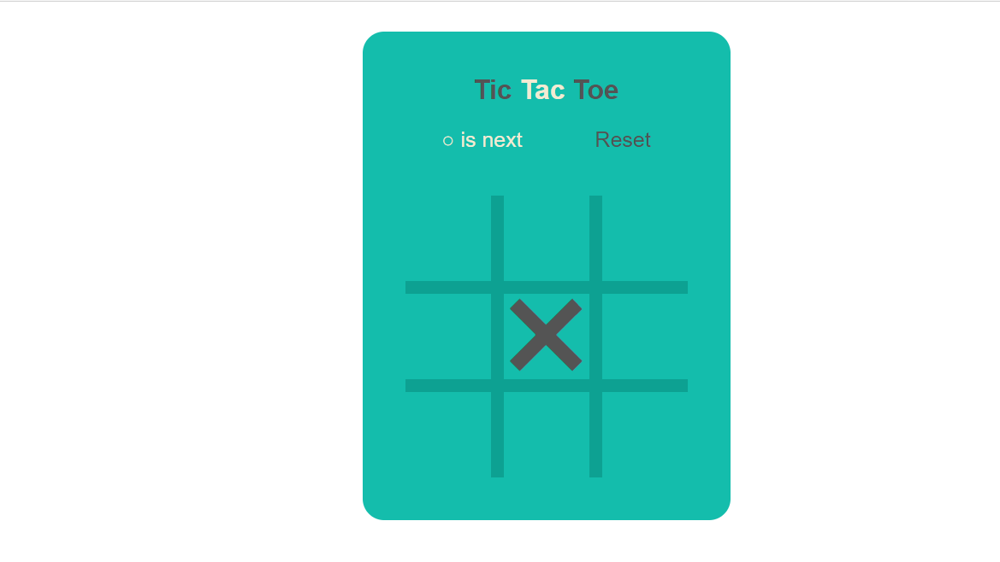
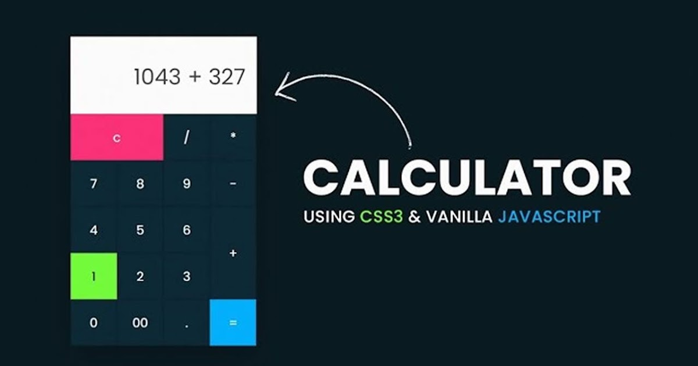

TIC - TAC - TOE
Tic-tac-toe (or Noughts and crosses, Xs and Os) is a pencil-and-paper game for two players, X and O, who take turns marking the spaces in a 3×3 grid>. The player who succeeds in placing three respective marks in a horizontal, vertical, or diagonal> row wins the game.
Players soon discover that best play from both parties leads to a draw (often referred to as cat or cat's game). Hence, Tic-tac-toe is most often played by young children.
The friendliness of Tic-tac-toe games makes them ideal as a pedagogical tool for teaching the concepts of good sportsmanship and the branch of artificial intelligence that deals with the searching of game trees. It is straightforward to write a computer program to play Tic-tac-toe perfectly, to enumerate the 765 essentially different positions (the state space complexity), or the 26,830 possible games up to rotations and reflections (the game tree complexity) on this space.
Ways of winning the game
-
Three in a row i.e. either crosses or all zeroes.
Cases are
- [1,2,3]
- [4,5,6]
- [7,8,9]
-
Three in a column i.e. either crosses or all zeroes.
Cases are
- [1,4,7]
- [2,5,8]
- [3,6,9]
-
Three in diagonal i.e. either crosses or all zeroes.
Cases are
- [1,5,9]
- [3,5,7]
Calculator
A calculator is a device that performs arithmetic operations on numbers. The simplest calculators can do only addition, subtraction, multiplication, and division. More sophisticated calculators can handle exponent ial operations, roots, logarithm s, trigonometric functions, and hyperbolic functions. Internally, some calculators actually perform all of these functions by repeated processes of addition.
As calculators became more advanced during the 1970s, they became able to make computations involving variables (unknowns). These were the first personal computers. Today's personal computers can still perform such operations, and most are provided with a virtual calculator program that actually looks, on screen, like a handheld calculator. The buttons are actuated by pointing and clicking.
Theoretically, a modern computer is a calculator that works with binary numbers and has a much larger memory. But in the practical sense, a computer is far more than a mere calculator, because of the wide variety of non-computational tasks it can perform.
Operations
The simplest calculators can do only addition, subtraction, multiplication, and division. More sophisticated calculators can handle exponent ial operations, roots, logarithm s, trigonometric functions, and hyperbolic functions.
Addition
When we have to add two numbers then we use the addition operation and this operation is carried out by the + symbol on calculator.
Multiplication
When we have to multiply two numbers then we use the multiplication operation and this operation is carried out by the X symbol on calculator.
Substraction
When we have to Substract two numbers then we use the Substraction operation and this operation is carried out by the - symbol on calculator.
Division
When we have to add two numbers then we use the division operation and this operation is carried out by the / symbol on calculator.
Percentage
When we have to calculate percentage then we use the percentage symbol and this operation is carried out by the % symbol on calculator.